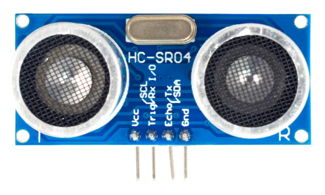
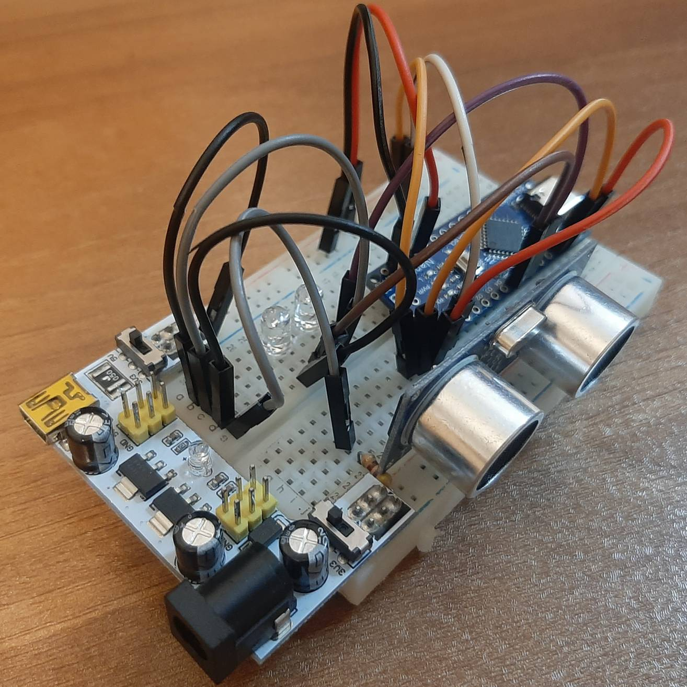
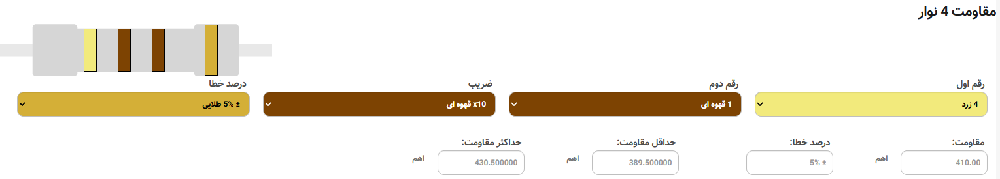
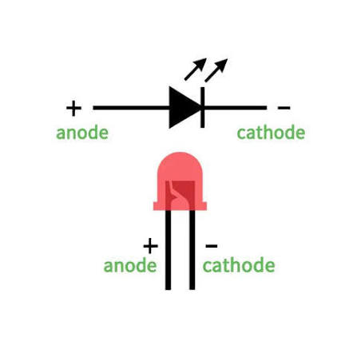
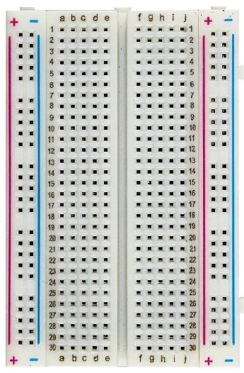
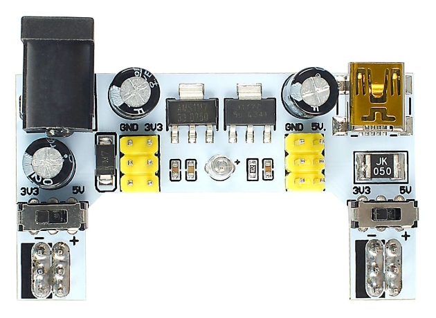
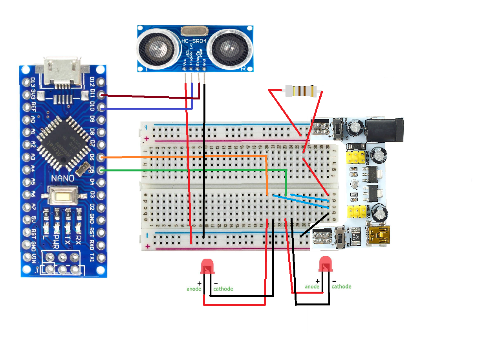
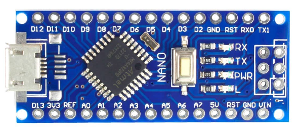

حسگر فراصوت
زمان رفتوبرگشت موج صوتی را اندازه میگیرد تا فاصلهٔ مانع به دست بیاید.
پروژهٔ اندازهگیری فاصله با حسگر فراصوت و آردوینو نانو

قبل از دیدن مدار، با بازیگران اصلی این سامانه آشنا شویم.

زمان رفتوبرگشت موج صوتی را اندازه میگیرد تا فاصلهٔ مانع به دست بیاید.

جریان LED را محدود میکند. مقدار استفادهشده در این مدار ۴۱۰ اهم است.

با هم چشمک میزنند؛ ریتم آنها نشان میدهد مانع در کدام بازهٔ فاصله است.

قطعات و سیمها را بدون لحیمکاری به هم متصل میکند تا مدار نمونهسازی شود.

ورودی DC یا USB را به ریلهای تغذیهٔ بردبورد میرساند؛ جامپر روی ۵ ولت قرار میگیرد.
حسگر HC-SR04 یک موج فراصوت میفرستد و منتظر بازگشت آن میماند. با دانستن مدت رفتوبرگشت موج، میتوان فاصله را محاسبه کرد.
مقاومت از LED محافظت میکند؛ بردبورد مسیر اتصالها را مرتب نگه میدارد.
کد رنگی زرد، قهوهای، قهوهای، طلایی؛ برای هر LED یک مقاومت جداگانه.
آند هر LED از مسیر مقاومت به خروجی خودش میرود؛ کاتد هر دو به زمین مشترک وصل میشود.
سوراخهای هر گروه، اتصال الکتریکی مشترک دارند؛ ریلهای کناری بعضی بردها در میانه قطعاند.
ماژول تغذیهٔ بردبورد، ورودی DC یا USB را به ریلهای تغذیه میرساند. برای این مدار خروجی روی ۵ ولت تنظیم میشود و زمین آردوینو، حسگر و LEDها مشترک است.
نقشهٔ سیمکشی، جای هر قطعه و ارتباط آن را با آردوینو نشان میدهد.

سیگنال حسگر را میخواند، فاصله را محاسبه میکند و تصمیم میگیرد LEDها با چه سرعتی چشمک بزنند.

ARDUINO NANOآردوینو مقدار فاصله را با سه بازه مقایسه میکند.
بیرون از بازهٔ ۲ تا ۱۰۰ سانتیمتر یا بدون دریافت پژواک، LEDها خاموش میشوند.
کد کامل در سمت راست است. مرحلهها را انتخاب کنید تا توضیح و خطهای مرتبط برجسته شوند.
شمارهٔ پایههای حسگر و LEDها مشخص میشود. متغیرها آخرین زمان اندازهگیری، وضعیت LEDها و فاصله را نگه میدارند.
حسگر اندازه میگیرد. آردوینو تصمیم میگیرد. نور، نتیجه را نشان میدهد.